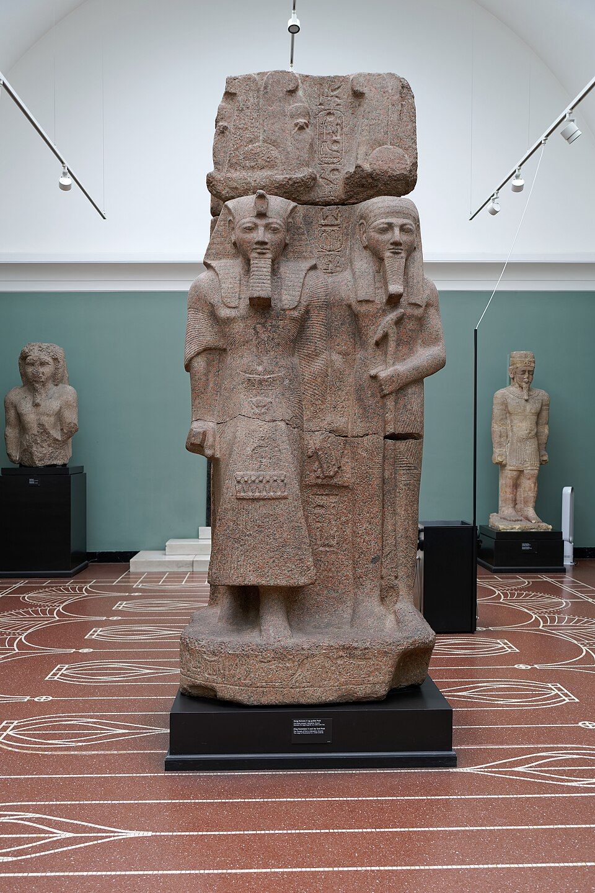

Птах
Птах · «Открывающий» · демиург Мемфиса, творящий сердцем и языком · господин ремёсел · «красив любовью»

Кто такой Птах
Птах — бог-творец Мемфиса, одного из главных городов Египта на всем протяжении его истории. Его имя переводят как «открывающий» (или «тот, кто иссекает»): он «открывает» сущее, выводя его из небытия, — как резчик открывает фигуру в камне. Культ Птаха древен: он почитался уже в I династиях, а мемфисская жреческая школа возвела его в ранг верховного демиурга — выше самого Ра, чей город, Гелиополь, был по соседству (конкуренция теологий, не война).
В «Мемфисском богословии» (камень Шабаки, VIII в. до н. э., текст по традиции — много старше) Птах творит мир Мыслью и Словом: «По воле сердца и языка явились Птах и имя его… он создал всех богов, их города, их ремёсла» — формула, поразительно близкая к «В начале было Слово» евангелиста Иоанна: учёные спорят о родстве текстов больше ста лет. Слово Птаха произносит — и вещь существует; это самая абстрактная теология творения из всех, что породил бронзовый век.
Иконография
Птах — человек в облегающем белом «мумийном» одеянии, с подчёркнутым «животом ремесленника»: тугой кокон, из которого выходят только руки со скипетром (соединённые уас+анх+джед) и лицо с «открытым» ртом. На голове — прилегающий колпак (иногда с крыльями). Эта «мумия без погребала» — знак его устойчивости: Птах стоит как джед. В Мемфисе его главный храм назывался «Хут-ка-Птах» — «владыка духов», а священный бык Апис — его «живое изображение»:
бык Апис, чёрный с белыми метками, при жизни кормился в храме, а после смерти мумифицировался и хоронился в Серапеуме Саккары с почестями фараона — Птах-Осирис-Апис, серапис эллинистической эпохи — прямой потомок этой связки.
Птах и ремесло
Птах — господин всякого ремесла: от каменотёса до ювелира; «красив любовью» — его эпитет, а ремесленники Мемфиса именовали себя «причтом Птаха». Зодчие считались его служителями: Имхотеп, строитель Ступенчатой пирамиды, носил титул «верховного жреца Птаха» и через два тысячелетия сам был обожествлён как бог-врач и зодчий — редчайший случай «повышения» смертного в Египте. Жрецы-ремесленники Птаха (мит-ри-Птах) — гильдия художников и резчиков; по преданию, в их храме хранился древнейший «папирус ремёсел».
Супруга Птаха — Сехмет — львица, «жар кузнечного горна»; сын — Нефертум, «прекрасный лотос», аромат, завершающий работу. Вместе — мемфисская триада.